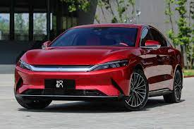
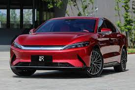
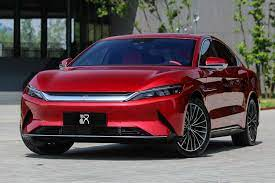

Характеристики: На выбор предложены три версии электрического Хана. Базовая имеет один электромотор на передней оси (222 л.с., 330 Нм) и аккумулятор емкостью 65 кВт∙ч. Заявленный пробег на одной зарядке — 506 км по устаревшему циклу NEDC, то есть в реальности будет около 350 км. Такой же седан с батареей на 77 кВт∙ч должен проехать 605 км (NEDC). А на вершине гаммы находится полноприводная версия. Передний электродвигатель тот же, а на задней оси установлен мотор с отдачей 272 л.с. и 350 Нм. Пиковая мощность двух двигателей — 494 л.с., крутящий момент — 680 Нм. С аккумулятором емкостью 77 кВт∙ч такой Han должен проехать 550 км, а время разгона до 100 км/ч — всего 3,9 с. Шильдик с этим показателем даже закреплен на крышке багажника: таким оригинальным способом компания BYD обозначает самые динамичные топ-версии своих моделей.